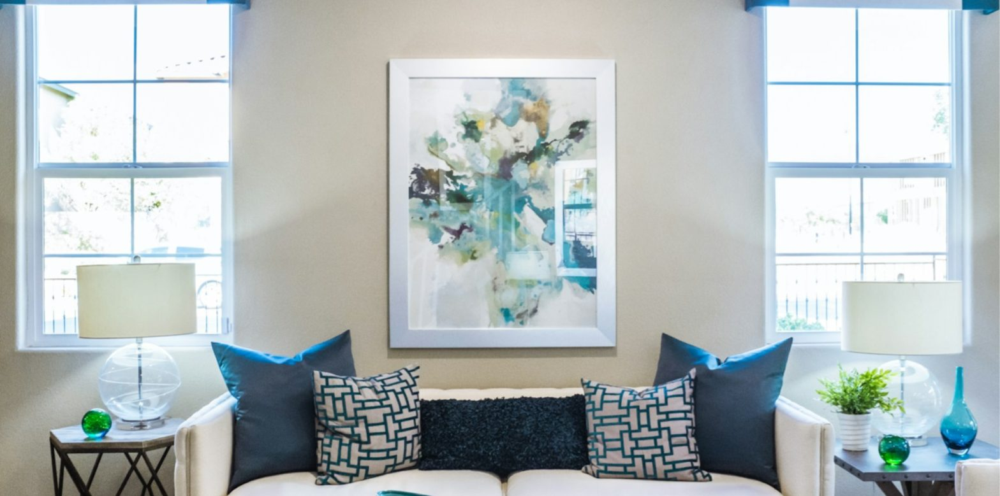

Neuropsicologia
Foco na relação entre o cérebro e o comportamento, avaliando funções cognitivas (memória, atenção, linguagem) para identificar disfunções ou potencialidades.
Um espaço seguro e acolhedor para você cuidar da sua saúde mental, superar desafios e redescobrir o seu bem‑estar emocional.

Nossa missão é guiar você através dos momentos difíceis, fornecendo as ferramentas necessárias para que você possa crescer, superar as adversidades e florescer em sua melhor versão.
Oferecemos um ambiente de escuta ativa, sem julgamentos, onde sua dor é validada e seu potencial é nutrido.
A cura não significa que o dano nunca existiu. Significa que o dano não controla mais a nossa vida.
Oferecemos abordagens terapêuticas baseadas em evidências, adaptadas às necessidades únicas de cada indivíduo, casal ou família.
Foco na relação entre o cérebro e o comportamento, avaliando funções cognitivas (memória, atenção, linguagem) para identificar disfunções ou potencialidades.
Expertise técnica na aplicação de testes e protocolos para o diagnóstico diferencial de transtornos mentais e emocionais.
Atuação no desenvolvimento emocional e nos processos de aprendizagem, auxiliando em dificuldades escolares e marcos do desenvolvimento.
Utilização de técnicas científicas para o ensino de novas habilidades e redução de comportamentos desafiadores, com foco em resultados mensuráveis.
Modelo terapêutico específico para crianças pequenas com autismo, focado em engajamento social, comunicação e aprendizado lúdico.
Foco na reestruturação de padrões de pensamento e comportamento para o tratamento de ansiedade, depressão e outros quadros.
Ferramenta complementar para acessar processos inconscientes, auxiliar no controle de dor, fobias e estados de relaxamento profundo.
Intervenção psicológica focada na relação com a comida, imagem corporal e mudanças de hábitos sustentáveis.
Atendimento especializado no processo de envelhecimento, lidando com transições de vida, saúde mental na terceira idade e doenças neurodegenerativas.
Visão estratégica sobre comportamento humano no trabalho, gestão de pessoas, liderança e saúde mental no ambiente corporativo.
Nosso compromisso primário é com o seu bem‑estar e sigilo absoluto. Nossa equipe é formada por profissionais altamente qualificados, em constante atualização e registrados nos conselhos competentes.
Projetamos cada detalhe da nossa clínica para transmitir paz e serenidade. Desde a iluminação até os aromas, tudo foi pensado para que você se sinta confortável e seguro desde o momento em que entra.
Agende sua consulta pelo WhatsApp. Atendimentos particulares e pela Unimed.
Venha nos visitar. Um espaço preparado com todo o carinho e conforto que você merece.
Clínica Flor de Lótus
R. Inglaterra, 50 · Vila Santa Isabel
Anápolis‑GO · 75020‑010
(62) 9162‑6580